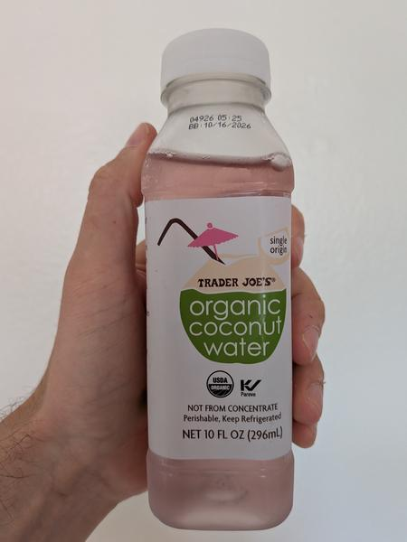

June 2025 · 10 fl oz · Still · Unpasteurized · No Added Sugar · USDA Organic · Single Origin
This is a young Thai coconut water, 100% juice, unpasteurized and USDA Organic.
Perfectly balanced between floral and sweet. Refreshing enough without losing too much body. Overall a really solid water. Not the best pick if you like earthiness or a hint of bitterness to your water. This is clearly TJ’s response to the success of Harmless Harvest. It is a noble competitor — although I do not think it is a white-label.